4 недели скоростного внедрения нейросетей в ваш проект
Вы забираете всю мою операционную систему контент-завода и под моим пристальным руководством запускаете её у себя
Дальше она работает на вас как целая команда: без маркетологов, SMM-щиков, дизайнеров, аналитиков, монтажёров, копирайтеров, отдела продаж и ассистентов
Сейчас Claude и ChatGPT есть даже у бабушек. И почти у всех это превращается в дорогое хобби: длинные обезличенные тексты с нейропылью и штампами, море интереса вокруг темы, а клиентов как не было, так и нет
Нейросети закрывают все три множителя, если собрать их в систему. Даже продукт под острую боль они помогают найти и собрать по аналитике рынка
Собрать систему в одиночку можно, но у меня, даже с маркетинговым опытом, кейсами и платным дорогим обучением под наблюдением куратора, на это ушло больше 4 месяцев
Сколько уйдёт у вас самостоятельно - вопрос: можно учиться по роликам на YouTube, которые устаревают быстрее, чем их смотришь, а многие бросают на второй неделе
Я этот путь прошла за вас, поэтому у вас он займёт всего 4 недели вместо 4 с лишним месяцев
Покажу всю систему по шагам на примере кейса
💡 Она сама прекрасно ведёт соцсети и делает это регулярно. Пришла за системой, потому что сейчас всё это работает на других скоростях и без раздутых команд за деньги
Что контент-завод сделал за первые три недели под моим чутким наблюдением? Ниже реальные цифры, скрины и результат. Убрали только имя
Начинаем мы всегда с анализа рынка. Контент-завод разобрал её Instagram*, Telegram, конкурентов и цены ещё до нашей первой встречи. Раньше такую аналитику заказывали маркетологу, и он делал её месяцами
А через две недели контент-завод собрал отчёт по цифрам: что выросло, что просело и что делаем дальше
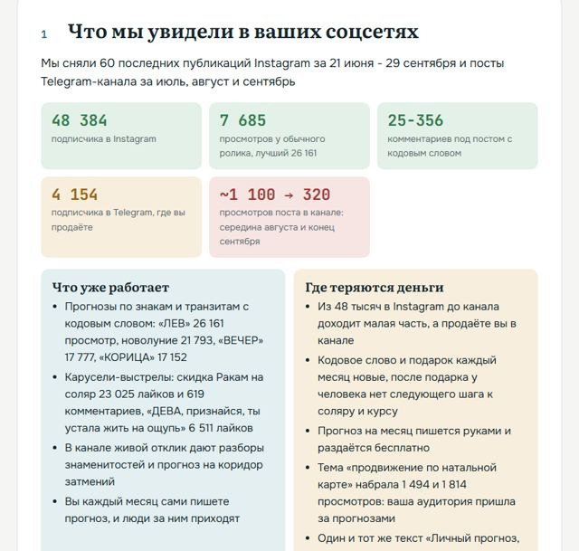
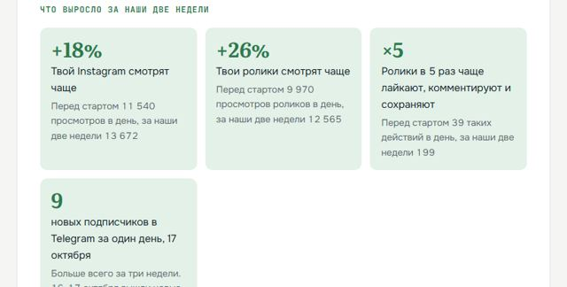
Пересобрали существующие услуги и продукты эксперта на базе аналитики конкурентов в нише. Под них создали интерактивные астрологические калькуляторы: человек вбивает свою дату рождения и получает уникальный персональный прогноз. Сколько дат, столько и формулировок
Это не линейный бот с заранее прописанными текстами, а работа кода, который написал контент-завод. Раньше такое заказывали программисту за сотни тысяч рублей и ждали от трёх месяцев до полугода. Здесь каждый собран за один вечер
Оплаты будут приходить на автомате, вообще без участия эксперта
4 покупки PDF-прогноза по 3 990 ₽ · 1 личный разбор эксперта за 6 990 ₽
После аналитики и создания продуктовой линейки создаётся контент: посты, карусели, ролики, монтаж, дизайн. Эксперт даёт нейросети мысль голосом, контент-завод отдаёт готовое под каждую площадку: фото, видео и стиль
Заголовки по темам, которые уже залетели в нише и проверены на сотнях тысяч представителей целевой аудитории, а не из головы эксперта
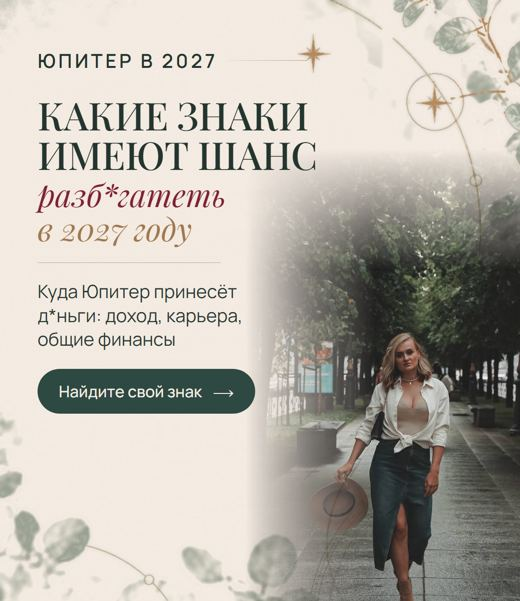
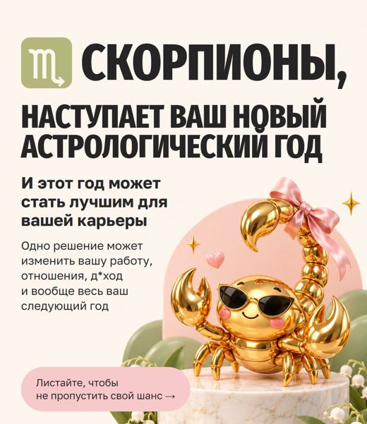
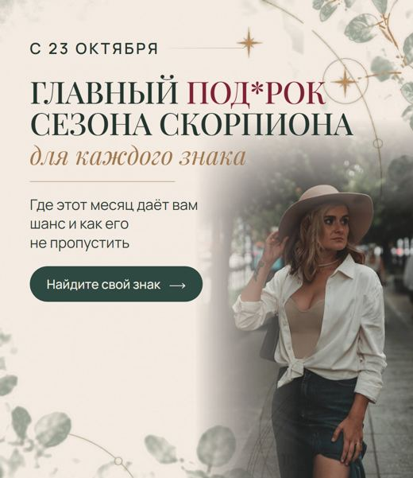
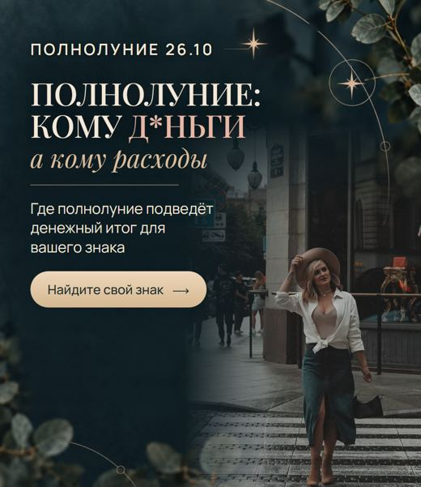
Заголовки и сценарии собирает контент-завод и подбирает по темам, которые уже залетели в нише
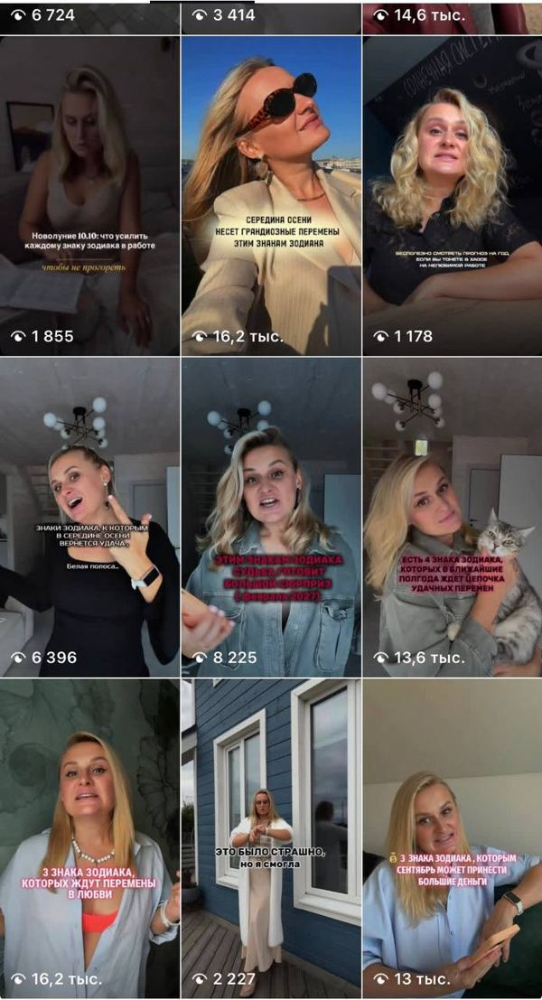
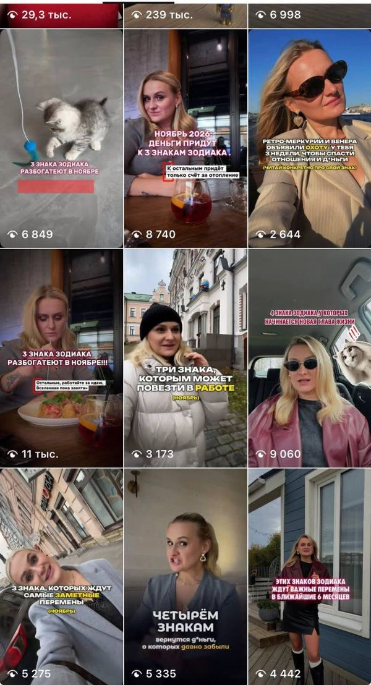
⚡ И это охваты только в Instagram*
Те же ролики в похожих форматах автоматически уходят на другие площадки через нашу систему автопостинга:
Плюс пробный режим Reels: ролик сначала показывают тем, кто на вас ещё не подписан, и это даёт ему дополнительный буст
Контент для канала в форматах, которые контент-завод знает заранее, выходит на автомате
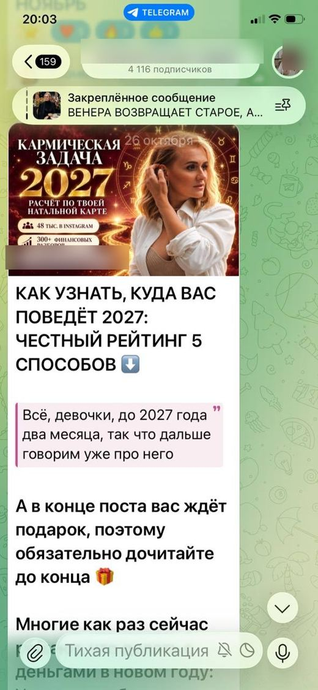
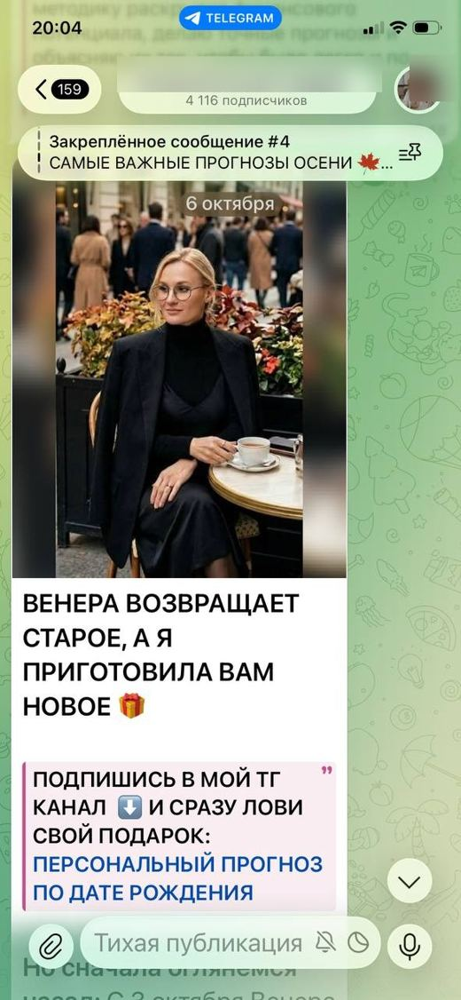
С одного поста в канале: 4 покупки PDF-прогноза и личный разбор, итого 22 950 ₽
первая продажа: годовой прогноз за 6 990 ₽ прямо с постов в Telegram-канале
просмотров аккаунта в день: было 11 540, стало 13 672
просмотров роликов в день: было 9 970, стало 12 565
взаимодействий с роликами в день: было 39, стало 199
реакций на каждые 100 просмотров роликов: было 0,39, стало 1,58
Сравнение: первые 14 дней с нами против 16 дней до старта, в пересчёте на день
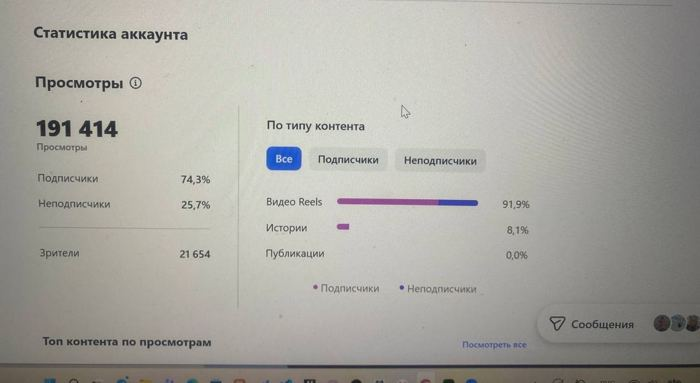
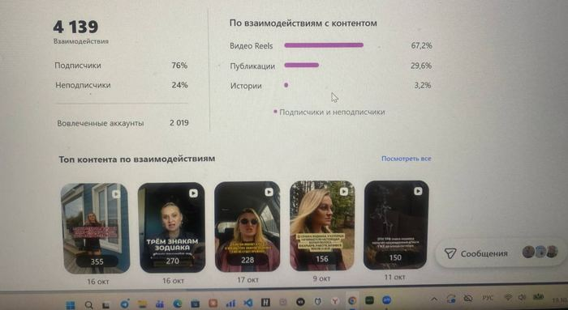
Дизайнеры, айти-специалисты и программисты, аналитики, которые ищут, что залетает на рынке, SMM-щики, контент-мейкеры, монтажёры, продюсеры, ассистенты. И каждому зарплата
Анализирует рынок и забирает темы, которые уже залетели, пишет, монтирует, оформляет, собирает калькуляторы и публикует. На автомате
Когда система выверена, её можно автоматизировать так, чтобы один раз проверили, одобрили и забыли о контенте во всех своих соцсетях на неделю. Завод сам выложит всё по расписанию
А теперь представьте: вы ставите задачу SMM-щику или маркетологу, и он отвечает вам, как человек. Только это нейросеть, и живёт она прямо у вас в Telegram
Чат с нейросетью, где у каждой задачи своя тема. Задачу даёте голосом, хоть с прогулки с собакой
Работает как маркетолог, SMM-щик, дизайнер и аналитик сразу. Только за 20 долларов в месяц, а не от 150 тысяч ₽ зарплат команды
Регистрируем Claude. Новому аккаунту лучше неделю пожить на бесплатной подписке, и эту неделю мы не теряем. Я вместе с вами анализирую нишу и помогаю внедрить первую систему прогрева под вашу нишу, направление и смыслы, под те углы, которые должны дать первые заявки уже через 5 дней. Контент создаётся минимум в двух соцсетях: Telegram и Instagram*. Дальше такие посты нейросеть будет писать за вас. К концу недели у нас есть прототип первого интерактивного лид-магнита
Так, что подписчики не отличат, что пишет нейронка. Создаём первый лид-магнит, публикуем его и подключаем Яндекс Метрику
Ролики → кодовое слово → интерактивный лид-магнит → прогрев в автоворонке и в Telegram → ваш продукт
Собираем цифры, видим, что работает, и решаем, куда двигаться дальше. Рулите уже вы, а я рядом и подправляю
Ваша операционная система остаётся у вас навсегда
Больше 230 движков, плагинов и скиллов, методы, инструкции, проверки и настроенные цеха под одним капотом
Ещё одна воронка: ваши статьи в Яндексе по вопросам, которые задают клиенты. Приводят людей месяцами, без рекламы
Ролики с субтитрами, вырезанными паузами и вставками без монтажёра
Все документы, как создать и упаковать мини-продукт под спрос рынка
Боты, автоворонки, автопостинг и аналитика
Анимированные карусели, которые останавливают ленту
Говорящий аватар и голос: ролики без съёмок
Установку делаем вместе, по инструкциям под Россию и Windows. Управление голосом из Telegram, код пишет нейросеть
Каждую неделю видите, что сделано и что это дало в цифрах
Система остаётся у вас со всеми инструкциями. 4 встречи за месяц, раз в неделю. Уроки, записи оперативок и все материалы остаются у вас ещё на полгода. При необходимости работу можно продлить ещё на месяц по цене для клиентов
Даже когда вы гуляете, спите и отдыхаете
Без команды. Без зарплат. Без вашего ежедневного контроля
4 недели со мной и АСП-система, которая остаётся у вас навсегда
Если собирать это у подрядчиков: стратегия, упаковка площадок, внедрение нейросетей, ролики, ведение канала, интерактивные лид-магниты под вашу нишу и автоматизация стоят от 250 тысяч до 1,5 миллиона ₽. И это снова 5-7 человек, от которых вы зависите
За 4 недели мы строим систему на нейронках и учим вас ею управлять. Если метафорично, даём вам суперскоростной болид и учим правилам дорожного движения
Мест в ноябре немного: мини-группа, каждый проект я веду лично. Поэтому заходим на этой неделе
Начать внедрение АСП 👉Нажмите, и откроется чат со мной в Telegram с готовым сообщением. Написать бесплатно
* Instagram принадлежит компании Meta, деятельность которой признана экстремистской и запрещена в РФ